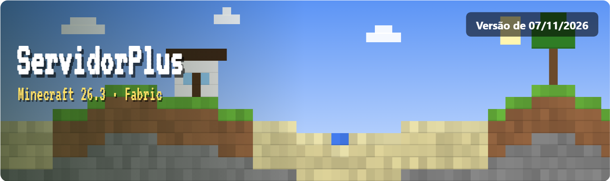
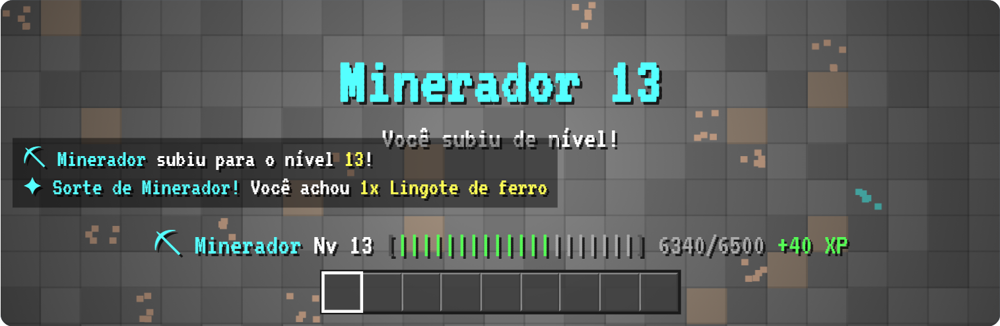
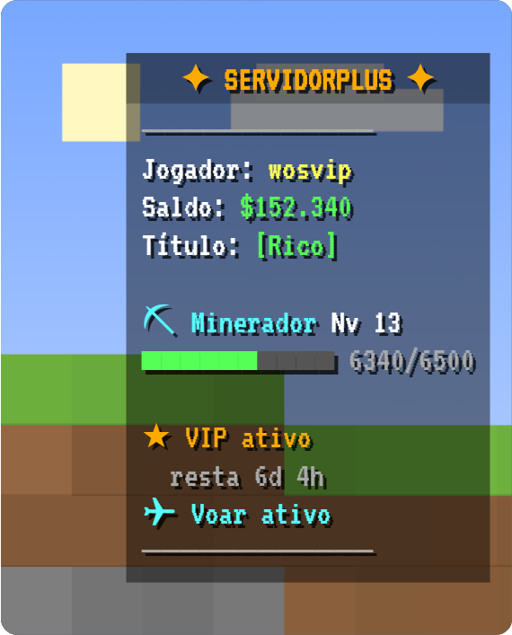
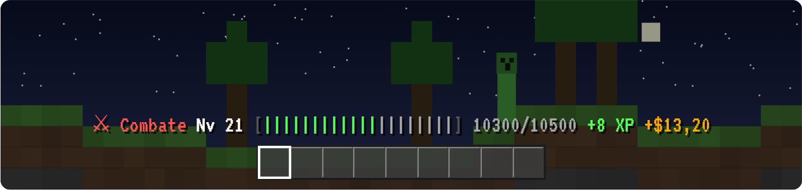
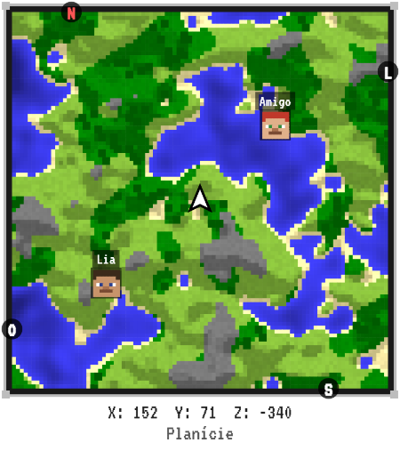
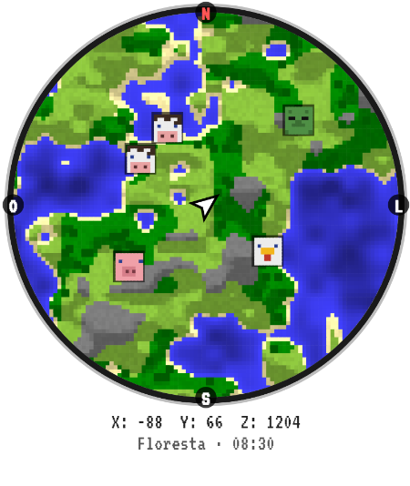
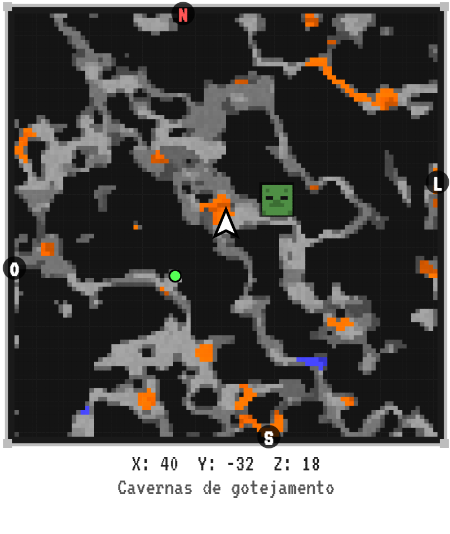
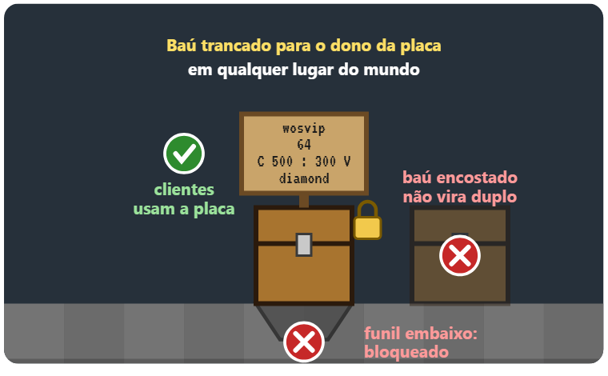
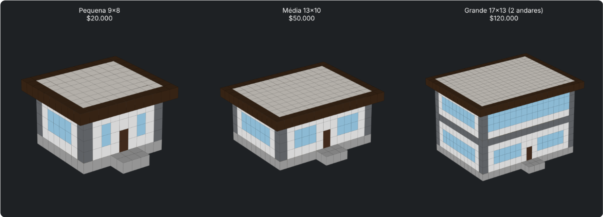

Mod de servidor para Minecraft Java 26.3 · Fabric
Guia completo: o que o mod faz e todos os comandos
Você só precisa baixar um arquivo: o servidorplus (.jar), grátis no site da wosvip®. Precisa ter o Minecraft Java original.
/ajuda no chat.mods do jogo: servidorplus e Fabric API. Só esses dois: o Mod Menu e o Sodium já vêm dentro do ServidorPlus NOVO.%appdata%\.minecraft\mods e dê Enter./ajuda no chat.Coloque os mesmos dois arquivos (servidorplus e Fabric API) na pasta mods do servidor Fabric 26.3 (o servidor precisa do Java 25). O minimapa, as macros, a durabilidade na tela e o morph rodam no jogo de quem joga: quem quiser usar coloca o mod no próprio jogo. Quem não instalar entra no servidor normalmente, só não tem essas partes.
Os comandos de jogador funcionam sem cheats. Só os comandos de admin precisam de OP (no servidor: op SeuNome no console; no single player: criar o mundo com cheats ativados).
| Comando | O que faz |
|---|---|
/ajuda | Mostra a lista de comandos |
/sethome [nome] | Salva uma home onde você está (Mundo Normal, Nether ou End) |
/home [nome] | Teleporta para a home |
/homes | Lista suas homes e em qual mundo estão |
/delhome <nome> | Apaga uma home |
/warp <nome> | Vai para uma warp |
/warps | Lista as warps do servidor |
/spawn | Vai para o spawn |
/back | Volta para o último local antes do teleporte |
/tpa <jogador> | Pede para ir até outro jogador |
/tpahere <jogador> | Chama o jogador até você |
/tpaccept | Aceita o pedido de teleporte |
/tpdeny | Recusa o pedido de teleporte |
| Comando | O que faz |
|---|---|
/kit ou /kits | Mostra os kits e quando cada um fica disponível |
/kit inicial | Kit iniciante (uma vez só) |
/kit minerador | Kit de mineração (a cada 12 horas) |
/kit vip | Resgate VIP: XP, ouro, diamantes, maçãs e mais (3h: 1 vez por ativação; 7d e 1m: semanal) |
/diario | Resgata o dinheiro diário |
/saldo [jogador] | Mostra o seu saldo ou o de outro jogador |
/pagar <jogador> <valor> | Transfere dinheiro para outro jogador |
/top | Ranking dos 10 mais ricos |
/recompensas | Tabela de quanto cada mob paga e quanto vale cada pesca |
/loja | Ajuda da loja e preço do item na sua mão |
/loja comprar <item> [qtd] | Compra qualquer item (ex.: /loja comprar diamond 5) |
/loja comprar spawner | Compra um gerador de mobs vazio ($50.000). Use um ovo nele para escolher o mob |
/ovos | Tabela de preços dos ovos de mob, agrupada por preço |
/ovo comprar <mob> [qtd] | Compra o ovo (ex.: /ovo comprar cow · /ovo comprar blaze 2). O Tab completa o nome |
/loja preco <item> | Mostra o preço de compra e venda |
/loja buscar <texto> | Procura itens pelo nome |
/vender mao [qtd] | Vende o item da mão (tudo ou só a quantidade escolhida) |
/vender tudo | Vende tudo do inventário (menos itens encantados, gastos e de kit) |
/loja valor <item> | Mostra o preço e de onde ele veio (matéria-prima ou receita) |
/loja livros | Lista os livros encantados e preços |
/loja livro <encantamento> <nível> | Compra um livro encantado (ex.: /loja livro afiacao 5) |
/placa | Explica como criar a sua loja com placa |
/placa criar <qtd> <preçoVenda> <preçoCompra> | Cria sua loja (segure o item e clique na placa) |
/placa lista · /placa cancelar | Lista suas lojas / cancela a criação |
/sethome loja · /loja loja | Marca o local da sua loja pública e abre para visitas |
/loja fechar | Fecha a loja pública para visitas (a área continua protegida) |
/loja visitar <jogador> | Vai até a loja pública de um jogador (ou /<jogador> loja) |
/comprar casa <pequena|media|grande> | Compra uma casa moderna construída à sua frente |
/casa permitir · /casa remover | Dá ou tira o acesso de um jogador às suas casas |
/casa lista · /casa ir [nº] | Lista suas casas / vai até a porta da casa |
/casa abandonar <nº> | Tira a proteção de uma casa (sem reembolso) |
/comprar trap <mob> | Compra uma trap de mob pronta com 10 geradores ($250.000) |
/trap lista · /trap ir [nº] | Lista suas traps / vai até uma delas |
/iteminfo | Mostra o código (#1) e o preço sugerido do item da mão |
/vip | Mostra os planos e o tempo restante do seu VIP |
/vip comprar 3h | 7d | 1m | Compra VIP de 3 horas, 7 dias ou 1 mês |
| Comando | O que faz |
|---|---|
/habilidades (ou /skills, /hab) | Mostra os seus níveis nas sete habilidades |
/habilidades <jogador> | Mostra os níveis de outro jogador |
/habilidades info <habilidade> | Tesouros da habilidade, nível necessário e chance de cada um |
/habilidades top <habilidade> | Ranking da habilidade |
/minimapa | Mostra a configuração do seu minimapa e as opções (só com o mod instalado no jogo) |
/macros | Abre a tela de macros (também em Opções > Macros...). Só com o mod instalado no jogo |
/durabilidade NOVO | Opções da durabilidade na tela (tecla H mostra/esconde). Só com o mod instalado no jogo |
| Comando | O que faz |
|---|---|
/craft ou /bancada | Abre uma bancada de trabalho em qualquer lugar |
/fornalha | Abre uma fornalha que funde na hora, sem carvão, e dá o XP ao tirar os itens |
/bau | Abre o seu baú VIP duplo: 54 espaços, só seu |
/voar ou /fly | Liga/desliga o voo: pule duas vezes para voar |
/visao | Liga/desliga a visão noturna |
/pvp | Liga/desliga o PvP: com ele desligado ninguém te ataca (e você não ataca) |
| Bloco de ferro | Clique direito com o item gasto: repara gastando 1 bloco do material |
| Picareta de netherite | Quebra um gerador de mobs e ele cai como item, guardando o mob |
/morph ou tecla G NOVO | Abre o menu de morph com todos os mobs (busca por nome) |
/morph virar <mob> NOVO | Vira o mob (nome em português ou inglês: zumbi, esqueleto, blaze...). O Tab completa |
| Tecla V NOVO | Usa o poder do mob (no Creeper: segure e solte) |
/morph sair NOVO | Volta ao normal (ou o botão "Voltar ao normal" no menu) |
| Comando | O que faz |
|---|---|
/vip dar <jogador> <3h|7d|1m> | Dá VIP (ex.: para quem pagou em dinheiro real) |
/vip remover <jogador> | Remove o VIP |
/eco dar <jogador> <valor> | Adiciona dinheiro |
/eco tirar <jogador> <valor> | Retira dinheiro |
/eco definir <jogador> <valor> | Define o saldo exato |
/setspawn | Define o spawn do servidor (área protegida em volta) |
/spawnraio <blocos> | Tamanho da área protegida do spawn (0 = desliga) |
/setwarp <nome> | Cria uma warp (pode ser no Nether e no End) |
/delwarp <nome> | Apaga uma warp |
/loja definir <item> <compra> <venda> | Preço manual (a venda tem que ser menor que a compra) |
/loja auto <item> | Volta o item para o preço automático |
/loja analise | Confere todas as receitas e mostra se existe brecha de lucro |
/habilidades definir <jogador> <habilidade> <nível> | Define o nível de uma habilidade de um jogador |
/morph liberar <jogador> <mob|todos> NOVO | Libera morph para um jogador (usado com morphPorAbate ou sem VIP) |
/morph tirar <jogador> <mob|todos> NOVO | Tira morphs liberados de um jogador |
/limparchao | Inicia a limpeza do chão na hora |
/servidorplus reload | Recarrega os arquivos de configuração |
Sete habilidades sobem de nível com o uso, no estilo do mcMMO. A cada 500 XP você sobe 1 nível, sem limite. Cada nível libera tesouros novos e aumenta a chance deles cair.

| Habilidade | XP por ação |
|---|---|
| Minerador | pedra 1 · cobre 4 · carvão 5 · obsidiana 5 · ouro e quartzo do Nether 6 · redstone 7 · ferro 8 · lápis 10 · ouro 12 · diamante 40 · esmeralda 50 · detrito ancestral 80 |
| Escavador | terra, grama, areia, lama e neve 1 · podzol, micélio e cascalho 2 · areia das almas 3 · argila 4 |
| Plantação | trigo, cenoura, batata e beterraba maduros 3 · fungo do Nether, cacau, melancia e abóbora 4 |
| Agricultor | abater animal adulto 2 · tosquiar 3 · reproduzir 6 |
| Lenhador | cada tronco 4 |
| Combate | zumbi 6 · esqueleto 7 · creeper 8 · bruxa 10 · enderman e blaze 12 · esqueleto wither 15 · evocador 25 · PvP 25 · guardião ancião 100 · warden 200 · wither 300 · dragão 500 · outros 5 |
| Pescador | lixo 4 · peixe 10 · tesouro 25 · tesouro encantado 40 |
Nível em que libera · tesouro · chance no nível de liberação (a chance cresce até 3x no nível 100). Só cai 1 tesouro por bloco, mob ou pesca.
| Nv | Tesouro | Onde | Chance |
|---|---|---|---|
| 1 | Carvão | pedra | 1,5% |
| 5 | Lingote de cobre | pedra | 0,8% |
| 10 | Lingote de ferro | pedra | 0,6% |
| 15 | Redstone | pedra | 1% |
| 20 | Lápis-lazúli | pedra | 0,8% |
| 25 | Lingote de ouro | pedra | 0,4% |
| 30 | Fragmento de ametista | pedra | 0,5% |
| 40 | Esmeralda | pedra | 0,12% |
| 50 | Diamante | pedra | 0,1% |
| 1 | Quartzo do Nether | Nether | 2% |
| 5 | Pepita de ouro | Nether | 2% |
| 10 | Pó de pedra luminosa | Nether | 1% |
| 20 | Creme de magma | Nether | 0,5% |
| 30 | Pó de blaze | Nether | 0,3% |
| 90 | Fragmento de netherite | Nether | 0,01% |
| 10 | Fruta do coro | End | 1% |
| 30 | Pérola do End | End | 0,3% |
| Nv | Tesouro | Chance |
|---|---|---|
| 1 | Graveto | 3% |
| 1 | Maçã | 1,5% |
| 15 | Favo de mel | 0,5% |
| 40 | Maçã dourada | 0,05% |
| Nv | Tesouro | Chance |
|---|---|---|
| 1 | Couro · Pena | 4% |
| 5 | Ovo | 3% |
| 15 | Laço | 0,8% |
| 25 | Cenoura dourada | 0,5% |
| 30 | Sela | 0,4% |
| 50 | Etiqueta | 0,2% |
| Nv | Tesouro | Onde | Chance |
|---|---|---|---|
| 1 | Pederneira | cascalho | 3% |
| 1 | Bola de argila | terra, areia | 2% |
| 5 | Linha | todos | 1,5% |
| 5 | Maçã | terra | 1% |
| 10 | Pó de pedra luminosa | areia, terra | 1,5% |
| 10 | Osso | cascalho, terra | 2% |
| 10 | Quartzo do Nether | areia das almas | 2% |
| 15 | Pólvora | cascalho | 1,5% |
| 15 | Bola de slime | argila | 3% |
| 15 | Pepita de ouro | todos | 1% |
| 20 | Teia | areia, argila | 0,8% |
| 25 | Redstone | todos | 1% |
| 40 | Esmeralda | todos | 0,1% |
| 50 | Lágrima de ghast | areia das almas | 0,3% |
| 60 | Diamante | todos | 0,08% |
| 75 | Bolo | terra | 0,05% |
| Nv | Tesouro | Chance |
|---|---|---|
| 1 | Farinha de osso | 3% |
| 10 | Torta de abóbora | 0,8% |
| 20 | Cenoura dourada | 0,5% |
| 30 | Fatia de melancia reluzente | 0,4% |
| 40 | Esmeralda | 0,1% |
| 50 | Bolo | 0,1% |
| 60 | Maçã dourada | 0,05% |
| Nv | Tesouro | Chance |
|---|---|---|
| 1 | Osso · Flecha | 4% |
| 5 | Pólvora · Linha | 3% |
| 20 | Pérola do End | 1% |
| 25 | Frasco de experiência | 1,5% |
| 30 | Esmeralda | 0,5% |
| 45 | Maçã dourada | 0,2% |
| 60 | Diamante | 0,15% |
| Nv | Tesouro | Chance |
|---|---|---|
| 1 | Bolsa de tinta | 4% |
| 1 | Vitória-régia · Alga | 3% |
| 10 | Fragmento de prismarinho | 2% |
| 15 | Cristais de prismarinho | 1,5% |
| 20 | Frasco de experiência | 1,5% |
| 25 | Etiqueta · Sela | 0,6% |
| 30 | Concha de náutilo | 0,6% |
| 35 | Esmeralda | 0,5% |
| 45 | Maçã dourada | 0,2% |
| 55 | Diamante | 0,15% |
| 75 | Coração do mar | 0,05% |
| 90 | Tridente | 0,02% |
No lado direito da tela aparece o placar com o seu nome, saldo e título. Se tiver VIP, mostra VIP ativo com o tempo restante, e também Voar ativo, Visão ativa e PvP desligado quando ligados.
Segurando uma ferramenta, o placar mostra a habilidade dela com nível e barra de progresso. Com outro item na mão, a linha some.
| Na mão | Habilidade |
|---|---|
| Picareta | ⛏ Minerador |
| Pá | ⚒ Escavador |
| Machado | ♣ Lenhador |
| Enxada, sementes, cenoura, batata | ❀ Plantação |
| Tesoura, trigo, balde, laço | ♞ Agricultor |
| Espada, arco, besta, tridente, maça | ⚔ Combate |
| Vara de pesca | 🎣 Pescador |

O título aparece antes do nome (em cima da cabeça, no TAB e no chat). Quando alguém sobe de título, todos recebem o anúncio no chat. VIPs também ganham a tag [VIP].
| Saldo a partir de | Título |
|---|---|
| $10.000 | [Empreendedor] |
| $100.000 | [Rico] |
| $1.000.000 | [Milionário] |
| $10.000.000 | [Multimilionário] |
| $100.000.000 | [Magnata] |
| $1.000.000.000 | [Bilionário] |
Matar mobs paga direto no saldo, e o valor aparece na barra junto com o XP da habilidade. Digite /recompensas para ver a tabela no jogo.

| Animais (adultos) | Paga |
|---|---|
| Bacalhau, salmão | $1 |
| Galinha, coelho, lula | $2 |
| Porco, vaca, ovelha, lula brilhante | $3 |
| Cabra | $4 |
| Coelho-cogumelo (mooshroom) | $5 |
| Chefes e fortes | Paga |
|---|---|
| Evocador | $50 |
| Devastador | $60 |
| Guardião ancião | $300 |
| Warden | $500 |
| Wither | $1.500 |
| Dragão do End | $3.000 |
| Monstros | Paga |
|---|---|
| Traça | $2 |
| Slime, piglin zumbificado | $3 |
| Cubo de magma | $4 |
| Piglin | $6 |
| Zumbi, husk, aldeão zumbi, aranha | $8 |
| Esqueleto, afogado, aranha da caverna | $9 |
| Stray, bogged, phantom | $10 |
| Creeper | $12 |
| Bruxa, saqueador, hoglin, zoglin, guardião | $15 |
| Vingador | $18 |
| Enderman, blaze, shulker | $20 |
| Ghast, breeze | $25 |
| Esqueleto wither, piglin bruto | $30 |
| Outros monstros | $5 |
Tudo que sai da água com a vara paga direto no saldo. O valor aparece na barra junto com o XP de Pescador, e os tesouros avisam no chat. A tabela também está no /recompensas.
| O que pescou | Paga |
|---|---|
| Bacalhau · Salmão · Baiacu · Peixe tropical | $3 · $4 · $5 · $6 |
| Lixo (bota velha, graveto, osso, vara gasta...) | $1 |
| Tesouros: sela · etiqueta · concha de náutilo | $20 · $25 · $30 |
| Tesouro encantado (livro, arco, vara) | $15 + $3 por nível de encantamento, até $30 |
Minimapa em alta resolução no canto da tela. Ele roda no jogo de cada jogador, então precisa do mod servidorplus na pasta mods do jogo (veja a Instalação). Funciona também no single player.



Cada jogador configura o seu com /minimapa. A configuração fica salva em config/servidorplus-minimapa.json, no jogo do jogador.
| Comando | O que faz | Padrão |
|---|---|---|
/minimapa ligar | desligar | Mostra ou esconde o minimapa | ligado |
/minimapa padrao | Volta tudo para o padrão | – |
/minimapa canto <canto> | superior_esquerdo, superior_direito, inferior_esquerdo ou inferior_direito | superior esquerdo |
/minimapa tamanho <64-256> | Tamanho do mapa em pixels | 128 |
/minimapa zoom <1-8> | 1 = mais perto, 8 = mais longe | 1 |
/minimapa formato quadrado | redondo | Formato da borda | quadrado |
/minimapa rotacionar sim | nao | O mapa gira com você | sim |
/minimapa cavernas sim | nao | Modo caverna embaixo da terra | sim |
/minimapa coordenadas | direcoes | bioma | hora sim | nao | Informações na borda e embaixo do mapa | sim (hora: não) |
/minimapa jogadores | nomes sim | nao | Outros jogadores e o nome deles no mapa | sim |
/minimapa mobs sim | nao | Mobs no mapa | não |
/minimapa estilo cabeca | ponto | Mobs como cabecinha ou bolinha colorida | cabeça |
/minimapa icones <4-16> | Tamanho das cabecinhas | 8 |
Painel no canto de baixo à direita com a durabilidade do que você está usando. Roda no jogo de cada jogador (precisa do mod servidorplus na pasta mods do jogo) e substitui o mod Durability Viewer.
| Comando | O que faz | Padrão |
|---|---|---|
/durabilidade | Mostra a configuração e as opções | – |
/durabilidade ligar | desligar | padrao | Mostra, esconde ou volta ao padrão | ligado |
/durabilidade canto <canto> | superior_esquerdo, superior_direito, inferior_esquerdo ou inferior_direito | inferior direito |
/durabilidade aviso som | tela | ambos | nenhum | Como avisar o item quase quebrando | som |
/durabilidade porcentagem sim | nao | Mostra em porcentagem (87.5%) | não |
/durabilidade barra sim | nao | Armadura ao lado da barra de itens | não |
/durabilidade espacos | efeitos sim | nao | Espaços livres · tempo das poções | sim |
Fica salvo em config/servidorplus-durabilidade.json, no jogo do jogador. Baseado no Durability Viewer (Giselbaer / fanta, licença MIT).
Quem tem VIP ativo pode virar qualquer mob do jogo (90 mobs), sem precisar matar nada. Os outros jogadores veem o mob no seu lugar, com o seu nome em cima. Quem não tem VIP vê o aviso para comprar no /vip. Precisa do mod instalado no jogo de cada jogador.
/morph): abre o menu com o ovo de cada mob. Busque pelo nome e passe o mouse para ver os poderes. Clique para virar./morph sair. Ao sair do jogo ou quando o VIP acaba, você volta ao normal sozinho.| Mob | Poder e passivo |
|---|---|
| Creeper | Segure V para carregar e solte: explosão. Imune a explosões |
| Enderman | Teleporta para frente. Desvia de flechas às vezes (a água machuca) |
| Blaze · Ghast | Bola de fogo · explosão na mira. Blaze não pega fogo e flutua; Ghast voa |
| Esqueleto · Stray · Bogged | Flecha certeira · flecha que deixa lento · flecha envenenada |
| Afogado · Guardião | Tridente · laser. Respiram e nadam rápido na água |
| Bruxa · Evocador · Breeze | Poção aleatória · linha de presas · carga de vento |
| Aranha · Slime/Magma | Sobe paredes · pulo gigante sem dano de queda |
| Warden · Wither · Dragão | Rajada sônica · 3 caveiras · bafo do dragão (força de chefe) |
| Abelha · Allay · Devastador | Ferrão venenoso · puxa os itens do chão · atropela quem está perto |
Fraquezas: zumbi, esqueleto e phantom queimam no sol (capacete protege), Enderman leva dano na água e o Shulker se teleporta na água. Baseado no Ultimate Morph Mod (balli, CC0).
O jogo travando ou com pouco FPS? Estes ajustes são opcionais e foram testados num PC com placa de vídeo de entrada (GeForce MX110): o FPS subiu de 25 para 54, mais que o dobro. Faça um de cada vez e veja quanto melhora no seu PC.
| Ajuste | Onde mudar | Recomendado | Por quê / ganho medido |
|---|---|---|---|
| Pacote 3D Default | Opções > Pacotes de recursos | Desativar | Deixa blocos e itens em 3D e pesa muito. 25 → 43 FPS |
| Faithful 64x (ou outro pacote HD) | Opções > Pacotes de recursos | Trocar por 32x ou usar o padrão | Texturas grandes gastam a memória da placa. 46 → 54 FPS |
| Nuvens | Opções > Vídeo | Rápidas ou Desligadas | Nuvens elegantes pesam no céu aberto. 43 → 46 FPS |
| Distância de renderização | Opções > Vídeo | 8 a 10 chunks | Cada chunk a mais é muito mais coisa para desenhar |
| Limite de FPS | Opções > Vídeo | 60 | Evita esquentar à toa e deixa o FPS mais estável |
| Gráficos | Opções > Vídeo | Rápido | Folhas e sombras mais leves |
| Sodium | Já vem no ServidorPlus | Manter | Motor de gráficos mais rápido. Aparece no F3 como "Sodium Renderer" |
| Placa de vídeo | F3 (lado direito) | Deve aparecer a NVIDIA/AMD | Se mostrar "Intel", o jogo está na placa mais fraca. Troque em Configurações do Windows > Sistema > Tela > Elementos gráficos |
| Memória do jogo | WOSVIP Launcher > Configurações | 4 GB | Mais memória não dá mais FPS. Com 6 GB o jogo usou só cerca de 0,9 GB |
| Tela cheia | WOSVIP Launcher > Configurações | Opcional | Em alguns PCs dá um pouco mais de FPS |
Os valores de distância, limite de FPS e gráficos não foram medidos no teste; são as recomendações comuns para PCs mais simples.
Uma macro é uma lista de ações que o jogo faz sozinho quando você aperta uma tecla: pescar, matar mobs na trap, ir até o baú esvaziar o inventário, comer, reparar a espada, craftar... As macros rodam no seu jogo, então precisam do mod na pasta mods do jogo.
/macros.Já vêm prontas: Pesca (tecla K), Farm de mobs (tecla J) e PvP (tecla R).
# são comentários. Linhas com / são comandos do servidor (ex.: /home bau).usar ou use, esperar ou wait, se ou if.cod, golden_apple, wheat_seeds, iron_block.esperar 2 = 2 segundos · 1.5s · 500ms · 10t (20 ticks = 1 segundo).se, enquanto e repetir sempre terminam com fim. Até 300 linhas por macro.| Ação (inglês) | O que faz |
|---|---|
/comando | Envia um comando do servidor |
falar texto (say) · aviso texto (echo) | Mensagem no chat para todos · mensagem só para você |
esperar 2 (wait) | Espera |
usar (use) · atacar (attack) | Clique direito · clique esquerdo |
esperar ataque (wait attack) | Espera a espada carregar o golpe (dano máximo) |
esperar peixe 45 (wait fish) | Espera o peixe morder (no máximo 45 s) |
slot 1-9 · selecionar <item> (select) | Troca o slot da mão · acha o item no inventário e põe na mão |
segurar / soltar (hold / release) | Segura ou solta: frente, tras, esquerda, direita, pular, agachar, correr, atacar, usar (soltar tudo) |
olhar <giro> <cima> (look) · virar <graus> (turn) | Olha para uma direção exata · gira a partir de onde está olhando |
esperar tela (wait screen) | Espera o baú ou a mesa abrir |
guardar tudo (deposit all) | Guarda o inventário no baú aberto. Fica com você: o item da mão, os slots que o script usa com slot N e os blocos de reparo |
guardar <item> [qtd] · pegar <item> [qtd] (take) | Guarda ou tira um item do baú aberto |
fechar (close) · craftar <item> [vezes] (craft) | Fecha o baú · crafta pelo livro de receitas |
parar (stop) | Desliga a macro |
nao / not na frente para inverter)| Condição (inglês) | Verdade quando |
|---|---|
inventario cheio (inventory full) | Não tem nenhum slot vazio |
inventario vazio (inventory empty) | Não sobrou nada que o guardar tudo levaria (serve para saber se o baú encheu) |
tem <item> [qtd] (has) · segurando <item> (holding) | Tem o item no inventário · o item da mão é esse |
vida < 6 (health) · fome < 14 (hunger) | Vida e fome de 0 a 20 (use < > <= >= =) |
tela aberta (screen open) · bau aberto (chest open) | Alguma tela aberta · um baú aberto |
olharGiro: 0 sul · 90 oeste · 180 norte · -90 leste. Cima/baixo: -90 reto para cima · 0 para frente · 50 bloco no chão à frente · 90 reto para baixo. Dica: aperte F3 e olhe para o bloco; a linha Facing mostra os dois números.
# PESCA (marque Repetir)
# /sethome pesca olhando para a água
# /sethome bau olhando para o baú
se inventario cheio
/home bau
esperar 5
usar
esperar tela
guardar tudo
fechar
se inventario cheio
aviso Baú cheio! Macro parada.
parar
fim
/home pesca
esperar 5
fim
selecionar fishing_rod
usar
esperar 1
esperar peixe 45
usar
esperar 1
# FARM NA TRAP (marque Repetir) # Espada no slot 1, comida no 9, # bloco de reparo no 8 slot 1 se vida < 6 aviso Vida baixa! Macro parada. /home bau parar fim se fome < 14 slot 9 segurar usar esperar 2 soltar usar slot 1 fim repetir 20 atacar esperar ataque fim # para bater mais rápido: # troque "esperar ataque" por "esperar 3t"
# REPARO NO BLOCO DE FERRO (VIP)
# /sethome reparo em cima do bloco,
# olhando para baixo
/home reparo
esperar 5
slot 1
usar
esperar 1
/home trap
esperar 5
# VÁRIOS BAÚS: se o primeiro encher,
# passa para o próximo
olhar 180 50
usar
esperar tela
guardar tudo
fechar
se nao inventario vazio
olhar 180 10
usar
esperar tela
guardar tudo
fechar
fim
se nao inventario vazio
aviso Todos os baús cheios!
parar
fim
guardar tudo. As macros ficam salvas no seu jogo, em config/servidorplus-macros.json.| Como ganhar / gastar | Valor padrão |
|---|---|
| Saldo inicial de todo jogador novo | $2.500 |
| /diario – jogador normal | $1.000 por dia |
| /diario – VIP | $2.000 por dia |
| Matar mobs | $1 a $3.000 por mob (até $2.000 por hora) |
| Pescar | $1 a $30 por pesca (até $2.000 por hora) |
| Comprar itens na loja | Depende do item (ex.: diamante $400) |
| Vender itens na loja | 40% do preço de compra (ex.: diamante $160) |
| Gerador de mobs vazio | $50.000 (a loja não compra de volta) |
| Ovos de mob | $10.000 a $70.000 |
| Plano | Comando | Preço | Pode comprar de novo |
|---|---|---|---|
| 3 Horas | /vip comprar 3h | $5.000 | 24 horas depois |
| 7 Dias | /vip comprar 7d | $50.000 | quando os 7 dias acabarem |
| 1 Mês | /vip comprar 1m | $150.000 | quando os 30 dias acabarem |
Cada plano tem o seu limite e um não bloqueia o outro: quem comprou o de 3 horas pode comprar o de 7 dias, e o tempo é somado ao VIP atual. O /vip mostra se cada plano está disponível ou quanto falta. O /vip dar do admin não tem limite.
Itens que entram no inventário ao ativar cada plano:
| Plano | Você recebe na hora |
|---|---|
| 3 Horas | Armadura completa, espada, picareta, machado e pá de ferro encantados |
| 7 Dias | Armadura completa, espada, picareta, machado e pá de diamante encantados (com Remendo), 1 cabeça aleatória, 16 obsidianas, 1 Ghast Seco e 1 Golem de Cobre |
| 1 Mês | Armadura e ferramentas de netherite PRO, arco, totem, 16 pérolas do End, 2 ovos de mob aleatórios, 1 spawner, 1 baú de Ender e 15.000 de experiência |
Vantagens do VIP: /kit vip, 15 homes (normal tem 5), diário de $2.000, 3 casas (normal tem 1), 20 lojas com placa (normal tem 5), /craft (bancada portátil), /fornalha (funde na hora, sem carvão, e dá XP), /bau (baú duplo de 54 espaços), /voar (pule duas vezes para voar), /visao (visão noturna), /pvp, morph (vire qualquer mob, tecla G), retirar geradores de mobs com picareta de netherite, teleporte sem contagem, não perde itens nem XP ao morrer e reparo no bloco de ferro. Quando o VIP vence, as vantagens param, o voo é desligado e o morph acaba sozinhos.
/bau abre um baú duplo de 54 espaços, só do VIP e separado do baú do Ender./bau antigo continua no baú do Ender (pegue num baú do Ender colocado no chão).A /fornalha continua fundindo na hora e sem carvão. Agora, ao tirar os itens prontos, você ganha a experiência de cada receita, igual a uma fornalha normal. Se fechar a fornalha com itens prontos dentro, o XP é dado na hora.
Fique de frente para um terreno plano e livre, compre e clique em [CONFIRMAR]: a construção sobe na hora, já protegida só para você.
| Comando | O que faz | Preço |
|---|---|---|
/comprar trap <mob> | Trap com 10 geradores do mob numa sala escura em cima e a caixa de matar na sua frente | $250.000 |
/trap lista · /trap ir [nº] | Lista suas traps · vai até a que escolher | – |
/trap abandonar <nº> | Tira a proteção e desliga (sem reembolso) | – |
Regra do próprio jogo: o gerador só funciona com você a até 16 blocos dele. Limite: 2 traps por jogador (VIP: 5). No config.json: precoTrap, maxFarmsNormal, maxFarmsVip.
Toda cana de açúcar do mundo cresce mais rápido: velocidadeCana no config.json (padrão 4 = 4x; 1 = normal do jogo). Só a cana muda; o resto do jogo fica igual.
/loja comprar spawner – gerador vazio por $50.000. Coloque e clique com um ovo para escolher o mob./ovos – tabela de preços. /ovo comprar <mob> [qtd] – compra (ex.: /ovo comprar cow).| Preço | Ovos |
|---|---|
| $10.000 | Todos os comuns: vaca, porco, ovelha, galinha, coelho, zumbi, esqueleto, aranha, creeper, slime e outros |
| $20.000 | Enderman, bruxa, guardião, cubo de magma, ghast, phantom |
| $30.000 | Blaze, esqueleto wither, piglin, piglin bruto, hoglin, breeze, coguvaca, axolote |
| $40.000 | Aldeão, saqueador, vingador |
| $50.000 | Golem de ferro, golem de neve, devastador, farejador, allay |
| $60.000 | Shulker |
| $70.000 | Evocador (dropa totem) |
Não são vendidos: dragão, wither, warden e guardião ancião. Preços no config.json: precoGerador, precoOvoComum, precoOvos, ovosBloqueados.
Compre com /loja livro <encantamento> <nível> e aplique na bigorna. Preço: $500 por nível. Níveis acima do normal (até 10) custam 3x. Remendo, Infinidade e Toque de Seda só existem no nível 1.
| Encantamento | Nome no comando | Preço por nível |
|---|---|---|
| Afiação / Proteção / Eficiência | afiacao · protecao · eficiencia | $500 |
| Inquebrável / Peso-Pena / Força | inquebravel · peso_pena · forca | $500 |
| Fortuna / Pilhagem | fortuna · pilhagem | $1.000 |
| Toque de Seda | toque_de_seda | $2.000 |
| Infinidade | infinidade | $3.000 |
| Remendo | remendo | $5.000 |
Exemplos: Afiação V = $2.500 · Afiação X = $15.000 · Remendo = $5.000. Digite /loja livros no jogo para ver a lista completa (mais de 40 encantamentos).
Coloque um baú (ou barril) com os itens e uma placa encostada nele. Escreva na placa:
| Linha | O que escrever | Exemplo |
|---|---|---|
| 1 | Qualquer coisa (o mod coloca o seu nome) | - |
| 2 | Quantidade | 64 |
| 3 | C = preço para os outros comprarem de você · V = quanto você paga | C 500 : 300 V |
| 4 | Nome do item, código do /iteminfo, ou vazio (item da sua mão) | diamond · #1 |
Depois clique com o botão direito na placa para ativar. Pode usar auto no lugar do preço (ex.: C auto) para o mod calcular pelo valor do item + encantamentos.
| O outro jogador faz | O que acontece |
|---|---|
| Clique ESQUERDO na placa | Aparece 'Deseja comprar...?' com [CONFIRMAR]: ele paga, o item sai do seu baú |
| Clique DIREITO na placa | Aparece 'Deseja vender...?' com [CONFIRMAR]: você paga, o item vai para o seu baú |
Itens encantados: segure o item e digite /iteminfo. O mod mostra o código (ex.: #1) e o preço sugerido. Escreva o código na linha 4: o comprador recebe exatamente aquele item, com todos os encantamentos (dá para ver passando o mouse no nome do item na confirmação). Para remover a loja, quebre a placa.
Todo baú ou barril com uma placa de compra e venda fica trancado para o dono da placa, mesmo fora da área do /loja.

Fique de frente para um terreno plano e livre e digite /comprar casa pequena, media ou grande. Clique em [CONFIRMAR] e a casa é construída à sua frente, já mobiliada, com a porta virada para você.

| Casa | Tamanho | Preço | Vem com |
|---|---|---|---|
| Pequena | 9×8 | $20.000 | cama, baú, bancada, fornalha |
| Média | 13×10 | $50.000 | sala com cozinha + quarto com 2 camas e 2 baús |
| Grande | 17×13, 2 andares | $120.000 | cozinha completa, encantamentos, bigorna, quarto com 3 baús |
Proteção: a casa e 2 blocos em volta ficam protegidos. Outros jogadores não quebram, não colocam blocos, não abrem baús nem portas e não usam baldes perto. Libere amigos com /casa permitir <jogador>. Antes de construir, o mod confere se o terreno é plano, livre, fora da água, do spawn, de lojas e de outras casas; se algo falhar, ele avisa e não cobra. Limite: 1 casa (VIP: 3). Explosões ainda podem danificar a casa.
Use /sethome loja no lugar da sua loja: uma área de 300×300 blocos em volta fica protegida (os visitantes só compram e vendem pelas placas). Depois use /loja loja para abrir para visitas. Os outros jogadores chegam com /loja visitar <seu nome>. Para fechar, /loja fechar.
Os preços da loja são calculados sozinhos pelas receitas reais do Minecraft 26.3, toda vez que o servidor liga:
| Item | Compra | Venda |
|---|---|---|
| Pedregulho | $2,00 | $0,80 |
| Fornalha | $17,61 | $7,04 |
| Lingote de ferro | $28,60 | $11,44 |
| Diamante | $400,00 | $160,00 |
| Sela | $64,47 | $25,78 |
| Baú de Ender | $628,43 | $251,37 |
| Caixa de shulker | $1.341,30 | $536,51 |
| Lingote de netherite | $7.937,61 | $3.175,04 |
| Gerador de mobs (vazio) | $50.000,00 | – |
No config.json: escalaPrecos (2.0 = diamante $400; aumente para tudo ficar mais caro), fatorVenda (0.40 = a loja paga 40%) e precosBase (muda o valor de uma matéria-prima, ex.: "diamond": 250).
Depois do /setspawn, a área em volta (30 blocos) fica protegida: ninguém quebra nem coloca blocos e ninguém leva dano. Jogadores novos nascem no spawn, e quem morre sem cama volta para ele. Admins podem construir normalmente. Mude o tamanho com /spawnraio <blocos>.
Sem VIP: aparece na tela 3, 2, 1 com “Indo para <destino>” antes de teleportar (home, warp, spawn, back e TPA). Com VIP: teleporta na hora.
Segure o item gasto e clique com o botão direito num bloco de ferro colocado no chão. O item volta novo sem perder os encantamentos, gastando 1 bloco do inventário:
| Item | Gasta |
|---|---|
| Netherite | 1 bloco de netherite |
| Diamante | 1 bloco de diamante |
| Ouro | 1 bloco de ouro |
| Ferro e os outros (couro, pedra, madeira, arco, tridente...) | 1 bloco de ferro |
Vale o maior plano ativo: quem tem 1 mês e compra 3 horas continua com o kit semanal. Os itens de kit não podem ser vendidos para a loja (só para outros jogadores, pela placa).
Dica: para limpar o chat só da sua tela, aperte F3 + D.
Ficam dentro da pasta do mundo, em servidorplus/ (cada mundo tem os seus dados):
| Arquivo | O que guarda |
|---|---|
config.json | Preços do VIP, das casas, do gerador e dos ovos, limites, diário, saldo inicial, tempos dos kits, limpeza do chão, economia, habilidades, dinheiro por mob e por pesca |
loja.json | Preço de compra e venda de todos os itens (recalculado sozinho; preços manuais são mantidos) |
jogadores.json | Saldo, VIP, compras de VIP, homes, kits, XP das habilidades e morphs de cada jogador |
bau_vip/ | Um arquivo por jogador com os itens do baú VIP (continua lá mesmo se o VIP acabar) |
blocos_colocados.json | Blocos colocados por jogadores (para não darem XP de habilidade) |
casas.json | Casas compradas, área protegida e jogadores permitidos |
placas.json · codigos.json | Lojas com placa e códigos de itens do /iteminfo |
warps.json | Warps criadas pelo admin |
No jogo de cada jogador: o minimapa em config/servidorplus-minimapa.json e as macros em config/servidorplus-macros.json e a durabilidade em config/servidorplus-durabilidade.json.
| Opção | O que faz | Padrão |
|---|---|---|
habilidadesAtivas | Liga/desliga as habilidades | true |
habilidadeXpPorNivel | XP para subir cada nível | 500 |
habilidadeNivelMaximo | Nível máximo (0 = sem limite) | 0 |
habilidadeNivelBonusMaximo | Nível em que o drop duplo e os tesouros param de crescer | 100 |
habilidadeMultiplicadorXp | 2.0 = evento de XP em dobro | 1.0 |
habilidadeDropDuploMaximo | % de drop duplo no nível de bônus máximo | 25 |
habilidadeChanceTesouroMaxima | Quantas vezes a chance dos tesouros multiplica | 3 |
habilidadeMinutosPvpMesmaVitima | Minutos para matar a mesma pessoa dar XP de novo | 10 |
dinheiroMobsAtivo | Liga/desliga o dinheiro por mob | true |
dinheiroPorMob | Valor de cada mob (ex.: "zombie": 8) | tabela |
dinheiroMonstroPadrao | Valor dos monstros que não estão na tabela | 5 |
dinheiroMobsLimitePorHora | Teto por jogador por hora (0 = sem limite) | 2000 |
dinheiroBonusPorNivel | % a mais por nível de Combate/Agricultor/Pescador | 0.5 |
dinheiroPescaAtivo | Liga/desliga o dinheiro por pesca | true |
dinheiroPescaLimitePorHora | Teto da pesca por jogador por hora | 2000 |
dinheiroPorPeixe · dinheiroPescaLixo | Valor de cada peixe · valor do lixo | tabela · 1 |
dinheiroPorTesouro | Valor dos tesouros simples (sela, etiqueta, concha) | tabela |
dinheiroTesouroEncantadoBase · PorNivel · Maximo | Valor do tesouro encantado: base + por nível, até o máximo | 15 · 3 · 30 |
precoGerador | Preço do gerador vazio na loja | 50000 |
precoOvoComum | Preço dos ovos que não estão em precoOvos | 10000 |
precoOvos | Preço de cada ovo mais caro (ex.: "evoker": 70000) | tabela |
ovosBloqueados | Ovos que não são vendidos | chefes |
morphAtivo NOVO | Liga/desliga o morph | true |
morphSoVip NOVO | VIP ativo vira qualquer mob; sem VIP não usa | true |
morphPorAbate NOVO | Quem não é VIP libera o morph do mob que matar | false |
morphRecargas NOVO | Tempo de recarga entre os poderes da tecla V | true |
morphDisfarce NOVO | Virou monstro, os monstros não atacam | true |
morphExplosaoQuebraBlocos NOVO | Explosões e fogo dos morphs quebram/queimam blocos | false |
morphVidaMaxima NOVO | Teto de vida ao virar um mob (Wither teria 300) | 100 |
morphBloqueados NOVO | Mobs que não podem ser morph (ex.: ["ender_dragon", "wither"]) | nenhum |
Depois de editar um arquivo, use /servidorplus reload ou reinicie o servidor.